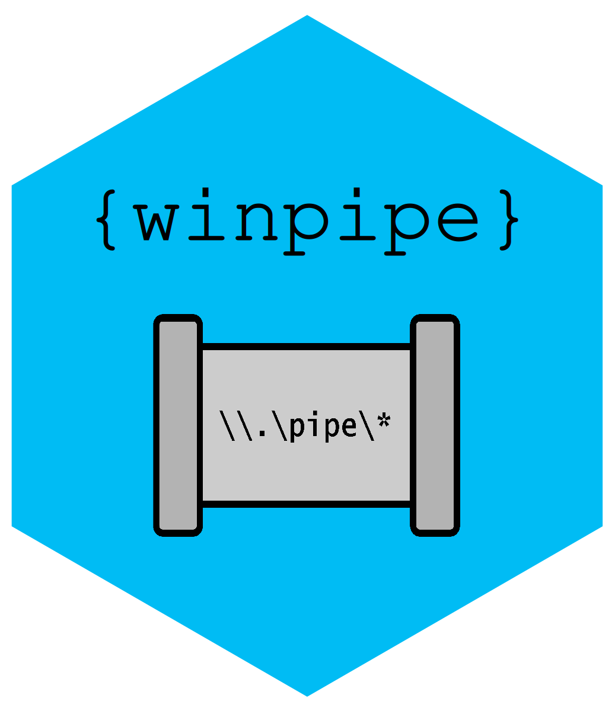

Proxies
proxy.RdStarts a local relay proxy for a named pipe. The relay proxy
lives in a background process through r_bg.
Essentially, this is a way to communicate with named pipes
through HTTP requests. The relay server takes HTTP requests from
a client (e.g. with curl or httr2), sends them
to the named pipe using a winpipe and then sends
the response back to the HTTP client.
np_relay() is the workhorse function, which contains the
server socket logic. np_proxy() is a simple wrapper that
starts the relay server in a background process in order to
not block the main session.
Usage
np_proxy(name, port = httpuv::randomPort(), relay = np_relay)
np_relay(name, port)Value
np_proxy() returns an object of class winpipe_proxy.
This object contains the base URL that accepts requests and a
process object that manages the server child process.
np_relay() returns nothing but runs a server that accepts requests as
long as the function is running.
Examples
# np_proxy() is a good way to communicate with named pipes
# that communicate over HTTP, e.g., docker
if (np_exists("docker_engine") && requireNamespace("httr2")) {
library(httr2)
proxy <- np_proxy("docker_engine")
# GET requests, e.g., to query the docker version
resp <- request(proxy$base_url) %>%
req_url_path("/version") %>%
req_perform() %>%
resp_body_json(resp)
resp[c("Version", "ApiVersion", "Os")]
# POST requests, e.g., to create a container
# do not run this if you don't wish to modify your docker state
if (FALSE) { # \dontrun{
# pull image
pull <- request(proxy$base_url) %>%
req_url_path("/images/create") %>%
req_url_query(fromImage = "hello-world", tag = "latest") %>%
req_method("POST") %>%
req_perform()
pull$status_code
# create container
created <- request(proxy$base_url) %>%
req_url_path("/containers/create") %>%
req_url_query(name = "winpipe-test") %>%
req_body_json(list(Image = "hello-world:latest")) %>%
req_perform()
created$status_code
} # }
}
#> Error: object 'resp' not found